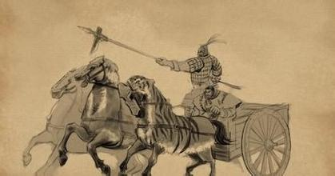

国殇创作背景
冰与火之歌
某度 2016/7/17
在屈原生活的楚怀王和楚顷襄王时代，秦国经过商鞅变法，在战国七雄中后来居上，扩张势头咄咄逼人，楚国成为其攻城略地的 主要对象之一。但楚怀王却放弃了合纵联齐的正确方针，一再轻信秦国的空头许诺，与秦交好，当秦国的诺言终成画饼时，秦楚 交恶便不可避免。自楚怀王十六年（公元前313年）起，楚国曾经和秦国发生多次战争，都是秦胜而楚败。 仅据《史记·楚世家》记载：楚怀王十七年（公元前312年）， 楚秦战于丹阳（在今河南西峡以西一带），楚军大败，大将屈殇被俘，甲士被斩杀达8万，汉中郡为秦所有。 楚以举国之兵力攻秦，再次大败于蓝田。
楚怀王二十八年（公元前301年），秦与齐、韩、魏联合攻楚，杀楚将唐昧，取重丘（今河南泌阳北）。 次年，楚军再次被秦大败，将军景缺阵亡，死者达2万。再次年，秦攻取楚国8城，楚怀王被骗入秦结盟，遭到囚禁， 其子顷襄王即位。公元前298年（顷襄王元年），秦再攻楚，大败楚军，斩首5万，攻取析（今河南西 峡）等15座城池。在屈原生前，据以上统计，楚国就有15万以上的将士在与秦军的血战中横死疆场。后人指出：《国殇》之作， 乃因“怀、襄之世，任馋弃德，背约忘亲，以至天怒神怨，国蹙兵亡，徒使壮士横尸膏野， 以快敌人之意。原盖深悲而极痛之”。古代将尚未成年（不足20岁）而夭折的人称为殇，也用以指未成丧礼的无主之鬼。 按古代葬礼，在战场上“无勇而死”者，照例不能敛以棺柩，葬入墓域，也都是被称为“殇”的无主之鬼。在秦楚战争中，战死 疆场的楚国将士因是战败者，故而也只能暴尸荒野，无人替这些为国战死者操办丧礼，进行祭祀。正是在一背景下，放逐之中 的屈原创作了这一不朽名篇。